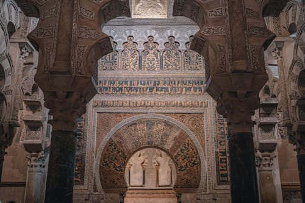
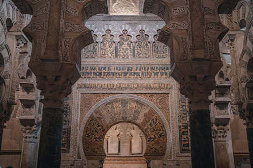

Mosque Cathedral Of Cordoba
Monument Of Islamic Architecture
Introduction
The Mosque–Cathedral of Córdoba[1][2] (Spanish: Mezquita-Catedral de Córdoba [meθˈkita kateˈðɾal de ˈkoɾðoβa]), officially known by its ecclesiastical name of Cathedral of Our Lady of the Assumption
.......
s
History
According to traditional accounts, the present-day site of the Cathedral–Mosque of Córdoba was originally a Visigothic Christian church dedicated to Saint Vincent of Saragossa,[27] which was divided and shared
.......
s
Construction of the mosque
The Great Mosque was built in the context of the new Umayyad Emirate in Al-Andalus which Abd ar-Rahman I founded in 756. Abd ar-Rahman was a fugitive and one of the last remaining members of the Umayyad royal family which had previously ruled the first hereditary caliphate based in Damascus, Syria.
Original layout
The original mosque had a roughly square floor plan measuring 74 or 79 square meters per side, equally divided between a hypostyle prayer hall to the south and an open courtyard (sahn) to the north.[12]: 40 [15]: 19 As the mosque was built on a sloping site, a large amount of fill would have been necessary to create a level ground on which to build.
Qibla alignment
Mosques were normally aligned with the qibla (the direction of prayer), which is theoretically the direction of Mecca. From Cordoba, Mecca is to the east-southeast, but the Great Mosque of Cordoba is instead oriented more towards the south.[49][50] This orientation, which doesn't match that of modern mosques, reflects the pre-existing street alignment of Roman Cordoba.
 
